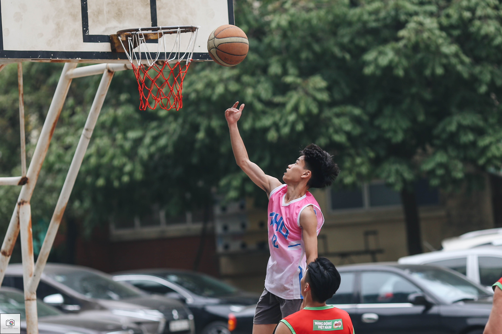

Bóng rổ - Basketball
Chơi bóng rổ để vui nhưng nếu không thắng liệu chúng ta có vui không? Và đây là câu chuyện của tớ cùng trái bóng cam.
Năm 2018 là năm tớ thi cấp 3, tớ may mắn đã
đỗ vào Trần Hưng Đạo - Thanh Xuân. Lúc đó là lớp 10
tớ vẫn còn chơi đá bóng, mê đá bóng lắm. Lúc đấy
thì các câu lạc bộ của trường : cầu lông, đá cầu, cờ
vua , cờ tướng, đội nhảy, đội chụp ảnh, đội bóng rổ,...
Rồi cô giáo chủ nhiệm bảo là mỗi người trong lớp phải
tham gia một câu lạc bộ. Lúc đấy mình thấy mọi người
trong lớp chọn vào câu lạc bộ bóng rổ nên tớ cũng
tham gia vào. Lúc đầu tham gia chỉ để cho có, chống đối
giáo viên chủ nhiệm thôi với vì là nhiều bạn cùng
lớp tham gia nên mới đăng kí. Lúc đấy cũng chỉ nghĩ là chơi 1,2 buổi
rồi bỏ thôi, hehe.
Hôm đi try out thì đông lắm. Mọi người được kiểm tra
thể lực, kĩ năng bóng rổ, thi đấu 5 vs 5. Và không
nằm ngoài dự đoán, tớ không đạt yêu cầu một tiêu chí nào
ngoài thể lực. Rồi mọi người được thi đấu 5 vs 5. Đứng
bên ngoài sân bóng là bao nhiêu con mắt đang nhìn
tớ (một đứa chưa biết chơi bóng rổ) rồi họ chỉ cười trừ,
nhiều người còn nói to là: "Sao đánh gà thế, thế mà cũng
đi try out à?". Ở cái tuổi 16,17 cái tôi của tớ còn rất cao
nên chắc chắn không bao giờ chấp nhận những lời nói như thế cả
và trong một phút tức giận đấy tớ đã nghĩ là:"Bằng cách nào đấy, tao
sẽ chơi giỏi hơn chúng mày" - lúc đấy ăn thua lắm. Nhưng mà
nhờ thế mà tớ biết tớ đã yêu môn thể thao này.
Những ngày đầu tiên đi tập cùng cả đội, nhìn những người xung
quanh làm các động tác mượt mà thì mê lắm. Mọi người
cũng nhiệt tình chỉ dạy cho tớ nhưng mà tớ không thể
nào làm được cả. Rồi mọi người được chia đội để thi đấu.
Mỗi đội sẽ có một đội trưởng để chọn thành viên thi đấu, cảm
giác mà mình luôn là sự lựa chọn cuối cùng để làm
dự bị cho người ta nó khó chịu lắm, lúc mới đầu tập cũng nản
nhưng cũng vì những lí do đấy mà tớ có động lực để
tập, để tìm hiểu , để nỗ lực hơn. À còn một điều nữa, tớ may mắn vì
đã có một người bạn trong câu lạc bộ tên là Đức,
mặc dù lúc mới tập tớ không biết chơi nhưng mà
không hiểu vì sao hắn vẫn chọn tớ là người đầu tiên
vào đội mỗi khi thi đấu mặc dù chúng tớ không quen
biết nhau từ trước, rồi mỗi tối - tớ xin nhắc lại là
mỗi buổi tối nó cũng rủ tớ đi tập bóng rổ cùng.
Nó cũng là đứa làm tớ chơi bóng rổ tốt hơn mỗi ngày. Nếu
không có nó tập luyện cùng tớ từ con số 0 thì chắc
tớ đã bỏ bóng rổ lâu rồi.

Những ngày đầu tập chơi, trông cái dáng ném có giống quăng bừa không, hehe. Mỗi tối đều đi với Đức ra Banking - trùng hợp là sau này lại là ngôi trường đại học mình theo học.
Sau một năm luyện tập với bao nhiêu mồ hôi thì
đến năm 2019. Mình được chọn vào đội thi đấu giải
học sinh thành phố. Khá đáng tiếc là đội mình năm đó
dừng bước khá sớm, nhưng với tớ đó đã là một thành công nhỏ
vì tớ luôn ao ước được mặc trên mình bộ đồng phục đi đánh
giải bởi đó là minh chứng cho sự nỗ lực của tớ đã
được đền đáp xứng đáng. Mọi người nhìn tớ với một con mắt khác.
Hồi cấp 3 còn hay bỏ ca, chui ra cửa sau để xuống sân trường tập
bóng rổ. Nhiều hôm còn bị cô giáo biết, xuống tận sân để gọi lên lớp.
Rồi tớ cũng tự tin tham gia nhiều giải hơn, có nhiều huy chương. Và
đặc biệt hơn là những giải đó tớ đều được chơi bóng cùng những
người bạn, những người đồng đội tốt.
Giải đấu mà tớ nhớ nhất chắc là giải 5x5 Trần Hưng Đạo mặc dù đội tớ chỉ được huy chương đồng nhưng đấy là giải đấu tớ được đánh chính và tớ chứng tỏ với tất cả mọi người rằng tớ đã nỗ lực như thế nào. Mỗi trận đấu tớ đều cố gắng 100% sức của bản thân. Tớ sẽ để lại hight light của tớ ở đây cho mọi người cùng xem nhé. Ấn vào phần BBBB trong link nhé.
Và tớ cũng chẳng biết là tớ đã yêu bóng rổ từ bao giờ. Khi tớ buồn tớ chơi bóng rổ, tớ vui tớ cũng chơi bóng rổ. Bóng rổ chưa lành cho những tổn thương tinh thần của tớ, giúp tớ cải thiện hơn về mặt thể chất. Chưa bao giờ tớ hết yêu bóng rổ cả. Tớ luôn cảm ơn bản thân rằng tớ đã không bao giờ từ bỏ và đã luôn cố gắng vì nó.